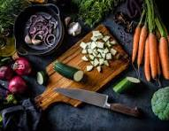

Cooking at home is one of the most practical life skills a person can develop. In a world full of delivery apps and instant meals, taking the time to prepare your own food might seem old-fashioned, but it offers rewards that convenience food simply cannot match.
Beyond the obvious benefit of saving money, home cooking gives you full control over what goes into your body. It also builds confidence, creativity, and a deeper appreciation for the meals you eat every day.
Top Reasons to Start Cooking at Home
- You control the ingredients, portion sizes, and nutritional quality of every meal.
- It is significantly cheaper than ordering takeout or eating at restaurants regularly.
- Cooking builds a genuinely useful skill that improves with practice over a lifetime.
Simple Ways to Get Started
- Begin with easy recipes that use only a handful of ingredients.
- Invest in a few quality basics: a sharp knife, a sturdy pan, and a cutting board.
- Watch short cooking tutorials online to learn proper technique.

If you're ready to explore recipes and techniques further, visit BBC Good Food.